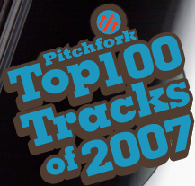

01.04.08
Posted in music, reviews at 1:45 pm by danvk
(See also podcasts, TV shows, books and movies)
This is the last post in this series before we resume our regularly scheduled programming. I still discover most of my music through Pitchfork’s lists, so I’ve included links to those lists where appropriate. You may also want to check out my Favorite Albums of 2006.
 Silent Shout
Silent Shout
(The Knife – 2006; PF #1 album of 2006)
Pitchfork’s fave album of 2006 is one of my fave albums of 2007. The opening beat/song really pull you in, and the first nine tracks are all good, with “Marble House” and “Like a Pen” being standouts. The last two tracks are just miserable though, I mean “Lily, Rosemary, and the Jack of Hearts” bad. This was the only album that I discovered through the 2006 list that I really enjoyed.
 In Rainbows
In Rainbows
(Radiohead – 2007; PF #4 album of 2007)
With its innovative “pay what you want” online distribution, it’s a good thing Radiohead made such a great album. It sounded nondescript the first time I listened to it, but quickly grew on me. Favorite tracks include “Bodysnatchers”, “Weird Fishes/Arpeggi” and “Jigsaw Falling into Place”.
 Hip Hop Is Dead
Hip Hop Is Dead
(Nas – 2006)
I’ve already reviewed this album before, so it should come as no surprise that I liked it! It’s too bad that every Nas album gets compared to his first. Maybe he wishes he pulled a Radiohead instead.
 Music for 18 Musicians
Music for 18 Musicians
(Steve Reich – 1974; PF #53 album of the 1970′s)
It’s on the PF list, but The Rest Is Noise inspired me to listen to it. I enjoyed it the first time through, but couldn’t say I was really inspired. Then I started hearing those bass clarinets everywhere: the sound of a bus engine, the rhythm of a toothbrush across my teeth. For bonus points, try picking out the 18 musicians. (I think this would be really hard!)
 Midnight Marauders
Midnight Marauders
(A Tribe Called Quest – 1993; PF #75 album of the 1990′s)
I could do without the interludes, but the main tracks are fantastic grooves, combining jazz, funk and hip-hop. Favorite tracks include “8 Million Stories”, “Sucka Nigga”, and “Midnight”.
Blue
(Joni Mitchell – 1972; PF #86 album of the 1970′s)
I first heard Joni Mitchell in high school but was nonplussed. Then I heard a CD of songs whose names all contained the word “California” on it about two years ago. Joni Mitchell’s “California” made an appearance right after Tupac’s “California Love”. It’s certainly a ridiculous sequence, but I’m been torn on whether it’s also a good one. It’s tough to follow “California Love”, so maybe you should just go for something as different as possible. Once you get used to her voice, this is a really enjoyable album.
FutureSex/Love Sounds
(Justin Timberlake – 2006; PF #25 album of 2006)
As a friend of mine explained, we should all be thanking JT: “I didn’t even know sexy was gone, but he’s bringing Sexyback!” I was also really impressed by his concert at Madison Square Garden, which I saw on TV. You can watch clips of it here.
Grace
(Jeff Buckley – 1994; PF #69 album of the 1990′s)
The most famous accidental drowning of the last 15 years. I prefer the harder rock songs to the more down-tempo ones like “Lilac Wine” and “Hallelujah”. Faves are “Last Goodbye” and “Eternal Life”.
Permalink
12.24.07
Posted in music, programming, web at 12:27 pm by danvk
 Pitchfork Media has released their two standard year-end lists, the Top 100 Tracks of 2007 and the Top 50 Albums of 2007. As usual, they’ve been lampooned all over the web, including one critique in pie chart form. For me, they made for perfect listening on a long car drive this weekend.
In my case, this list led to a good use of my Track Parser script, which is in all likelihood the most useful program I’ve ever written. It’s an AppleScript for iTunes (i.e. Mac only, sorry) that lets you apply regular expressions to track names/tags. Here’s how I used it today…
Through some strange turn of events (certainly nothing to do with this), I found myself with a playlist of the top 100 tracks. The music was all there, but none of the songs had their “Artist” field filled in! Here’s where my Track Parser script came in.
I googled around and quickly found this page, which has some commentary on the list, as well as what we’re interested in: a copy of all the songs/artists in simple text form. (For what it’s worth, I agree with his reactions.)
I copied the list and ran two regular expressions to get it down to just the artist (s/ ".*//g and ^\d*: if you must know). The tracks are in reverse order of what we want (100 to 1 instead of 1 to 100). So I ran pbpaste | tac | pbcopy to put the #1 track at the top of the list. Or I would have, if Mac OS X had the tac command. Instead, I ran this monstrosity:
pbpaste | perl -ne 'push @x, $_; END { print for reverse @x }' | pbcopy
to do the same thing. In retrospect, I should have just sorted my playlist in reverse track order.
Next I went into iTunes and selected my songs. I ran “Track Parser (Clipboard)” from the Scripts menu, clicked “New Pattern” and put in “%a” to extract the artist from each line. Track Parser handled the rest. Total time: about five minutes.
Permalink
08.07.07
Posted in music, personal at 11:00 pm by danvk
Not being able to remember the name of a song whose instrumental part is stuck in your head. It’s maddening!
NPR plays these fifteen second instrumental clips from popular songs between segments on some shows. I’ve listened to enough music that I’m usually really good at picking out the song. But this one escapes me. And there’s no words, so I can’t search for it!
It brings the whole issue of literacy into focus for me. I don’t think twice about writing a thought down on paper, but when it’s a bit of music, I’m totally powerless. I can’t really reproduce it (it’s got some weird reverb effects going on) and I certainly can’t convey it to someone else. It’s a prisoner in my mind. All I can say is it’s got bass and syncopated, reverbed percussion, like Squarepusher’s “Iambic 5 Poetry“, only more upbeat.
The only way out: I have to listen to every song in my library until I find it. ARGH!!!
Update: Two days later, my fifth guess paid off! It was 0:15 through about 0:30 of “Warning Sign” off More Songs About Buildings and Food by the Talking Heads. For the record, my previous guesses were: Pixies, Pavement, R.E.M. and Boards of Canada.
Permalink
07.19.07
Posted in music, personal at 10:15 pm by danvk
Either through misplacement or theft, I lost the dano, my iPod nano, sometime last week. It’s OK. It was only a 1 GB nano, and I won it in a drawing. I paid nothing.
In fact, I last bought an iPod in April, 2004. Here’s what it looked like:
That red glow was totally trendy. It’s pretty wild to compare the technical specs on each. The prices were identical – $300 each. What’s 3+ years done to the iPod?
| |
2004 |
2007 |
| Price |
$294.24 |
$302.02 |
| Capacity |
15 GB |
80 GB |
| Battery Life |
~5 hours |
“20 hours” (we’ll see) |
| Size |
4.1″ x 2.4″ |
4.1″ x 2.4″ |
| Thickness |
0.62″ |
0.55″ |
| Weight |
5.6 oz |
5.5 oz |
| Display |
2″, 160×128 |
2.5″, 320×240 |
So all the specs have improved, and the thing’s gotten smaller. Who ever said the march of technology was a bad thing? I’m mostly excited about the video capabilities. If I throw some TV episodes on there, I can jog with my iPod, commercial-free!
Permalink
04.20.07
Posted in music at 12:06 am by danvk
 An awful realization tonight: I live all of five minutes from Palo Alto, work for a software company, and I haven’t listened to Radiohead’s “Palo Alto” since I came to California! Consider that fixed…
An awful realization tonight: I live all of five minutes from Palo Alto, work for a software company, and I haven’t listened to Radiohead’s “Palo Alto” since I came to California! Consider that fixed…
I learned one thing from the wiki article I linked to above. “Palo Alto” was originally called “OK Computer”, and was going to be on the album of the same name. The song was cut and renamed, but the original name stayed in their minds for the album. It’s interesting because “OK Computer” is a fine metaphorical title for the album, but a great literal title for the song that became “Palo Alto”.
In a city of the future,
it is difficult to find a space.
I’m too busy to see you,
you’re too busy to wait.
Well I’m ok, how are you?
Thanks for asking
Thanks for asking.
Well I’m ok, how are you?
We hope that you are ok too.
Permalink
« Previous entries
Next Page »